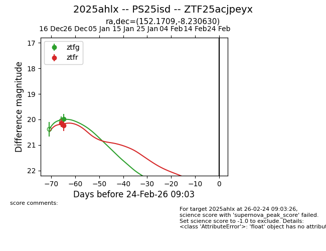
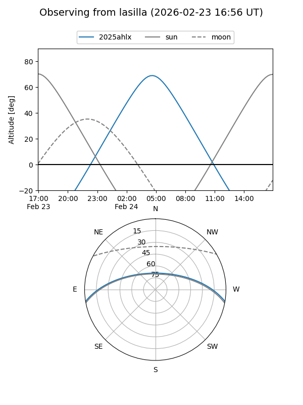
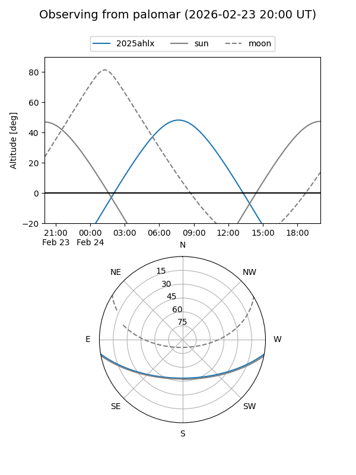
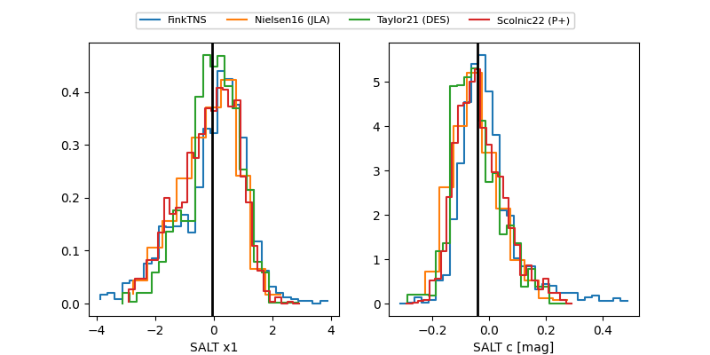

2025ahlx
Target 2025ahlx at 2025-12-25 08:10
Aliases and brokers:
FINK: fink-portal.org/ZTF25acjpeyx
Lasair: lasair-ztf.lsst.ac.uk/objects/ZTF25acjpeyx
ALeRCE: alerce.online/object/ZTF25acjpeyx
TNS: wis-tns.org/object/2025ahlx
YSE: ziggy.ucolick.org/yse/transient_detail/2025ahlx
alt names
ZTF25acjpeyx (ztf,fink_ztf)
2025ahlx (tns,yse)
PS25isd (panstarrs)
Coordinates:
equatorial (ra, dec) = 152.1709,-8.23063
equatorial (HMS+DMS) = 10:08:41.00,-08:13:50.27
galactic (l, b) = (248.9792,+37.05755)
Flags:
Photometry:
last ztfg=19.98, ztfr=20.23
1 ztfg, 2 ztfr detections
Lightcurve

Visibility


Additional plots
